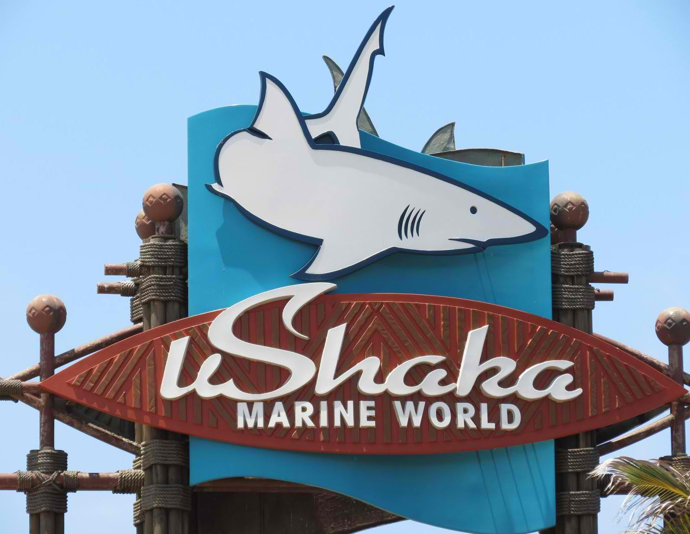

Top Attractions in Durban

Ushaka Marine World
A world-class entertainment theme park and tourism destination located on Durban’s Golden Mile.

Golden Mile Durban
Craft stalls, fishing spots & pavement cafes line a boardwalk by a busy beach known for surf breaks.

Crocodile Creek
Visit Crocodile Creek on the North Coast near Ballito and join in a family adventure, get up close to a live crocodile and learn about the fascinating Nile Crocodiles, Alligators and other crocodiles.